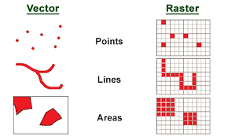
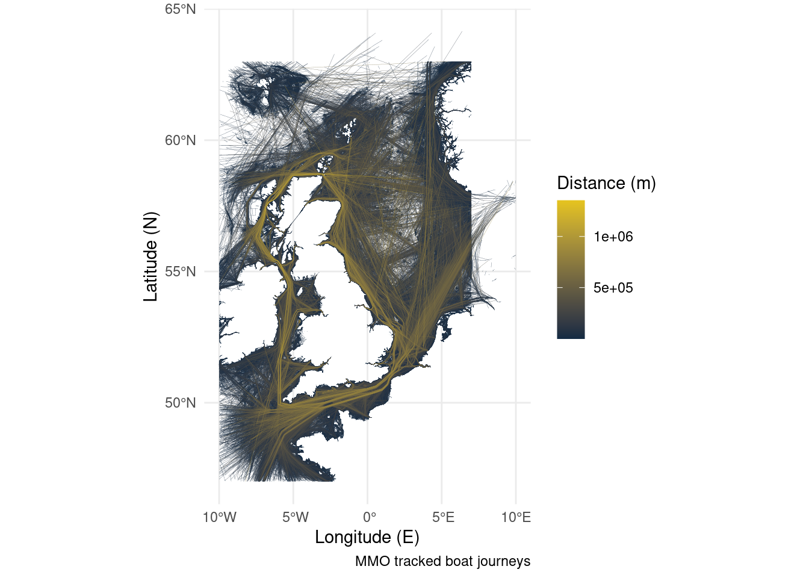
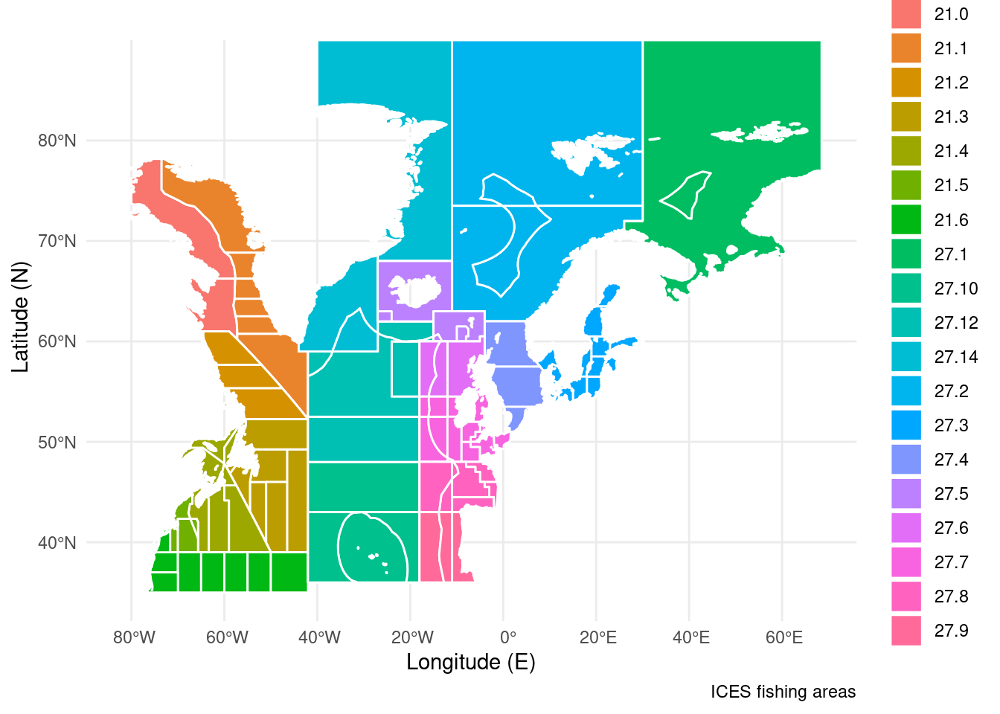
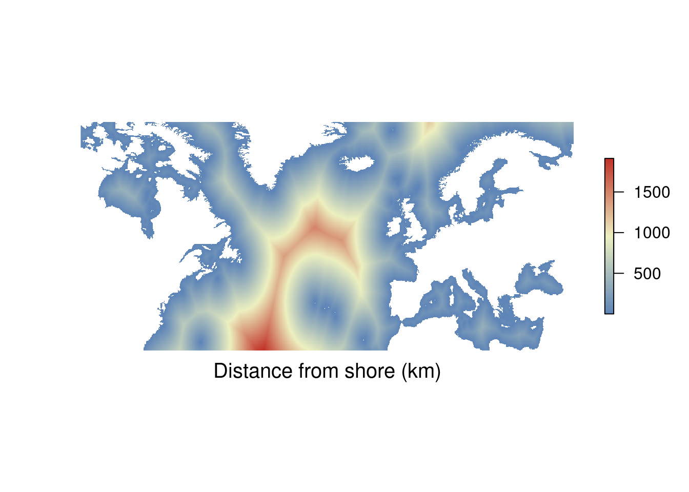

3 Data Types For Maps
identify the types of data used to make a map.
articulate your mapping goals using formal terminology.
When it comes to building a map, just like any other figure, there are multiple ways to display your data. You’ll be able to go a long way towards recreating something you like the look of if you can break it down into its constituent parts.
The best way to display your data on a map will vary depending on what you want to show, and whether you want to combine multiple datasets by layering up map elements.


There are two main flavours of data for maps, vectors and rasters (above, left and right). If you know anything about digital image formats you might be familiar with this. Vectors are join the dot exercises, this means they don’t become pixelated when you change the image size, and they can take up less memory than a high resolution raster because you just need to store the rules for connecting points. Rasters are a grid of cells and are very powerful tools useful for visualising regularly arranged data. They are specialised for this use case though, so might not be the best way to show every dataset you come across.

3.1 Points
Points are useful for indicating specific locations. Think sampling locations and other points of interest. The example below plots the locations of life boat stations around the UK and Ireland, importing from a csv file. You can download the data for yourself here.
If your data consists of lots of points and is regularly arranged have a look at the section on rasters.
RNLI <- read.csv("../data/RNLI.csv") # Import data from a csv file
ggplot(RNLI) + # Use the data to start a plot
geom_point(aes(X, Y, fill = Region), colour = "black", shape = 21) + # Make a super simple "map" using points
theme_minimal() + # Change appearance to a template
coord_equal() + # Set the aspect ratio
labs(x = "Longitude (E)", y = "Latitude (N)", # Add some labels
caption = "Lifebat stations around the UK and Ireland")
3.2 Lines
Lines are produced by connecting points, they are useful for showing boundaries or tracks. Think coastlines and animal tracks. The example below plots the tracks of anonymised boats around the UK, importing from a shapefile. You can download the data for yourself here.
Boats <- sf::st_read("../data/Anonymised_AIS_Derived_Track_Lines_2015_MMO/", quiet = TRUE) %>% # Import data from a shapefile
arrange(Shape_Leng) # Order the data so long journeys are plotted on top of short journeys
## There's a lot of data in the shape file, if this stresses out your computer try filtering out some of the boat tracks using an SQL query. Example below.
#Boats <- sf::st_read("../data/Anonymised_AIS_Derived_Track_Lines_2015_MMO/", quiet = TRUE, # Import data from a shapefile
# query = "SELECT Shape_Leng FROM Anonymised_AIS_Derived_Track_Lines_2015_MMO WHERE Shape_Leng > 10000") %>% # You can import a subset of the data using an SQL query.
# arrange(Shape_Leng) # Order the data so long journeys are
ggplot(Boats) + # Start the plot
geom_sf(aes(colour = Shape_Leng), size = 0.05) + # Plot the lines in the shape file
scale_colour_gradient(low = "#132B43", high = "#e6c41e") + # Set a colour scale
theme_minimal() + # Use an appearance template
labs(x = "Longitude (E)", y = "Latitude (N)", # Add some labels
caption = "MMO tracked boat journeys",
colour = "Distance (m)")
3.3 Polygons
Polygons are produced by enclosing lines. This allows you to fill an area. This can be useful for indicating marine protected areas or land masses. The example below plots ICES fishing areas in the north Atlantic, importing from a shape file. You can get the data here.
ICES <- sf::st_read("../data/ICES_areas/", quiet = TRUE) %>% # Import the polygons from a shapefile
filter(SUBOCEAN == 2) %>% # Limit to north Atlantic
drop_na(F_SUBAREA) # Drop polygons labelled NA
ggplot(ICES) + # Start a plot
geom_sf(aes(fill = F_SUBAREA), size = 0.5, colour = "white") + # Add the polygons
theme_minimal() + # Use an appearance template
labs(x = "Longitude (E)", y = "Latitude (N)", # Add some labels
caption = "ICES fishing areas",
fill = NULL)
3.4 Rasters
Rasters are a regular arrangement of cells which cover an area. They are useful when you have continuous data which changes across an area. Think sea surface temperature or depth. You wouldn’t want to define a polygon for every box and fill them with a unique colour! Rasters excel at doing this particular job. Rasters can be saved in many formats, this can be as simple as a csv file of regularly spaced X and Y coordinates. The example below imports a raster layer of distance from shore directly from an online database.
library(sdmpredictors) # Load functions
distance_to_shore <- load_layers("MS_biogeo05_dist_shore_5m") # Import raster
ne_atlantic_ext <- extent(-100, 45, 30.75, 72.5) # Define a cropping window
distance_to_shore_crop <- crop(distance_to_shore, ne_atlantic_ext) # Crop raster to fit the North Atlantic
my_colors = colorRampPalette(c("#5E85B8","#EDF0C0","#C13127")) # Get a colour ramp
plot(distance_to_shore_crop, col = my_colors(1000), axes=FALSE, box=FALSE) # Plot the raster
title(cex.sub = 1.25, sub = "Distance from shore (km)", # Add labels
line = -1.5)